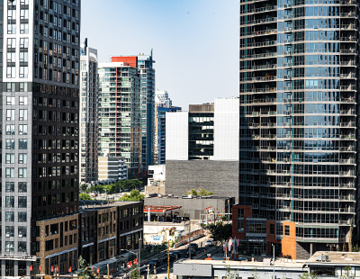
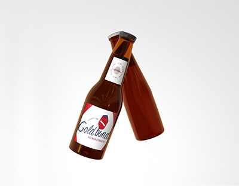

Hero
History Stories
The Begining
1908
Gold Bond was founded in 1908 in New England. The company is known for its foot relief powders and creams. Over the history the ownership of the company changed with different owners all bringing different end goals for the company. It wasnt until 1930 where the company took off. There was a complete change in the style of marketing and Gold Bond became the product of choice by a vast majority of people. With Gold Bond taking off there where many business inquiries and patents they would file for cornering the market directly to them.
The Trial
1960
Gold bond had success in many of their business endeavours. In 1960 a company named Molson released a beer named Molson Canadian. Gold bond took interest in the company, but nothing materialized. Gold bond would then attempt making their own alcohol products with names such as Gold Pale Ale and Bonding IPA. Unfortunately, neither of these products would take off. The public was disappointed in their efforts. Over the next couple years, they would eventually scrap the project and look to acquire an established company.
The Merger
1980-1990
Gold Bond began scouting for a company to purchase. They scouted Europe and were unsatisfactory of their findings. Everything came back to a company started in none other than North America. Molson at the time was an overly established company coming slightly down from the incredible take off that the company had with the release of Canadian. Molson had never truly thought of selling their product line. With both companies having success Gold Bond put forth an offer that was impossible to pass up. With the owner of Molson agreeing to the terms it would take the next ten years for the company transition to take full effect. In the year 1990 it was official that Molson would undergo a name change and represent the Gold Bond name on the label
The Golden Age
2000

Gold Bond enters its golden era. 2000 was a crucial year for the company as they would extend their product by not only one but two new beverages. They announced that adding to their beer they would feature an English Pale Ale and a soon to be summer favourite India Pale Ale. This placed Gold Bond into the top alcohol producer in North America. This was the start of a new timeline for Gold Bond Brewing.